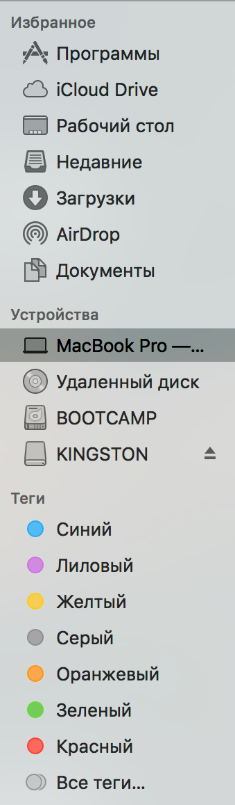
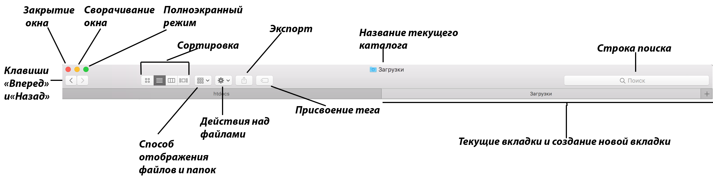
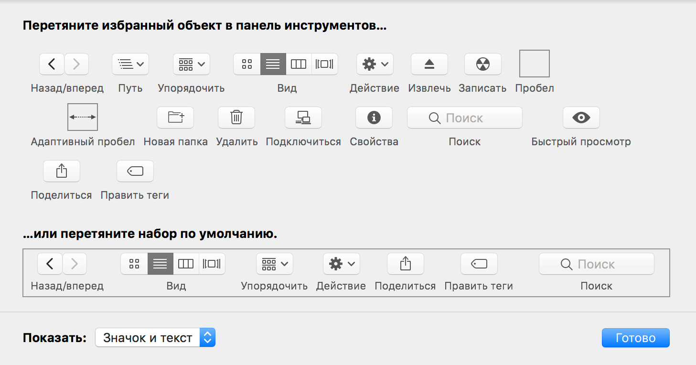
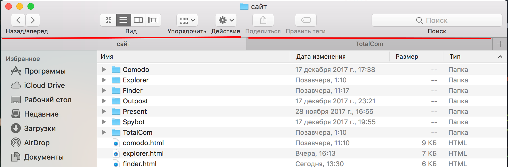

|
Finder Сайт производителя 
Рис 1. Файловый менеджер Finder Finder — файловый менеджер операционной системы Mac OS, первая программа, которую видит пользователь после загрузки Mac. Finder организует и отображает в различных видах файлы и папки, находящиеся на компьютере и любых внешних носителях, подключённых к нему. Также при помощи Finder можно осуществлять поиск и организацию информации. Для отображения содержимого устройств хранения данных используются окна и значки. Программа Finder называется так потому, что с ее помощью можно найти и упорядочить все свои файлы. Рис 2. Панель быстрого доступа Панель быстрого доступа позволяет осуществлять быстрый переход к избранным каталогам (системным и пользовательским). Чуть ниже расположена панель носителей данных. Finder предоставляет возможность присваивать файлам и папкам теги - графические метки. В дальнейшем пользователь может отфильтровать файлы на компьютере по этим тегам.  Рис 3. Панель инструментов Панель инструментов сверху содержит основные инструменты для работы с файлами и папками. В отличие от большинства файловых менеджеров, в Finder отсутсвует панель пути. В правой части расположено поле поиска, причем пользователь может выбрать - осуществлять поиск в указанном каталоге или же во всей системе. Файловый менеджер позволяет открывать несколько окон двумя способами - несколько независимых окон или одно окно с вкладками. Рис 4. Изменение панели инструментов У пользователя есть возможность настроить панель инструментов под свои нужды с помощью редактора. Рис 5. Режим просмотра в виде вкладок Один из способов навигации в Finder - вкладки, представленные на рис.5. |